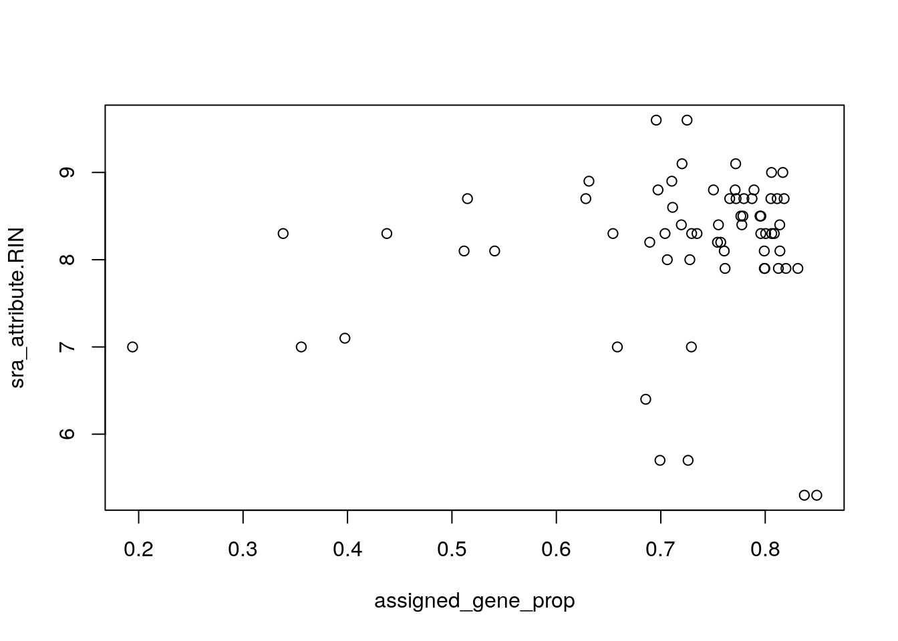
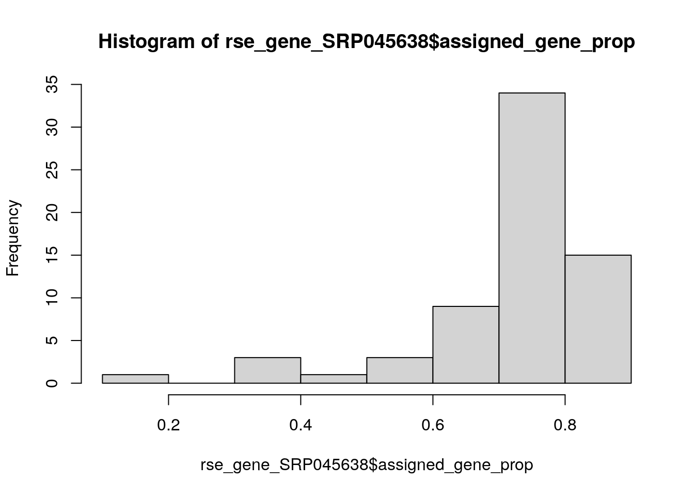
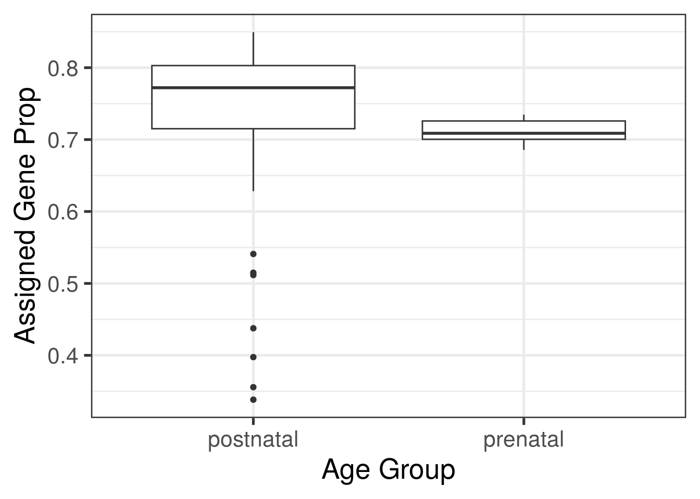
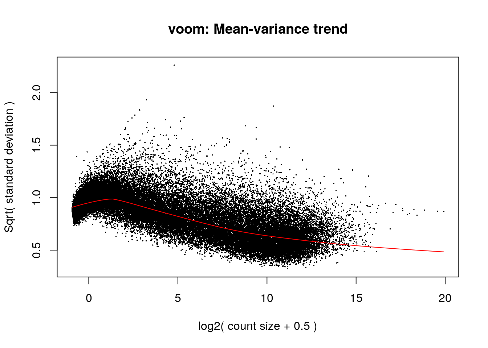
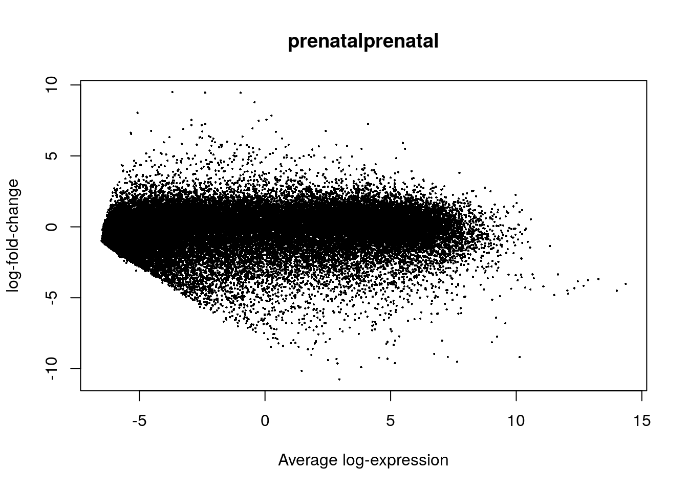
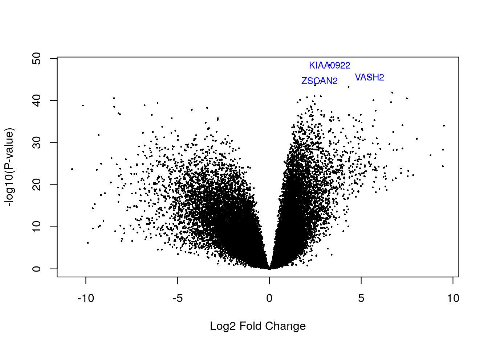
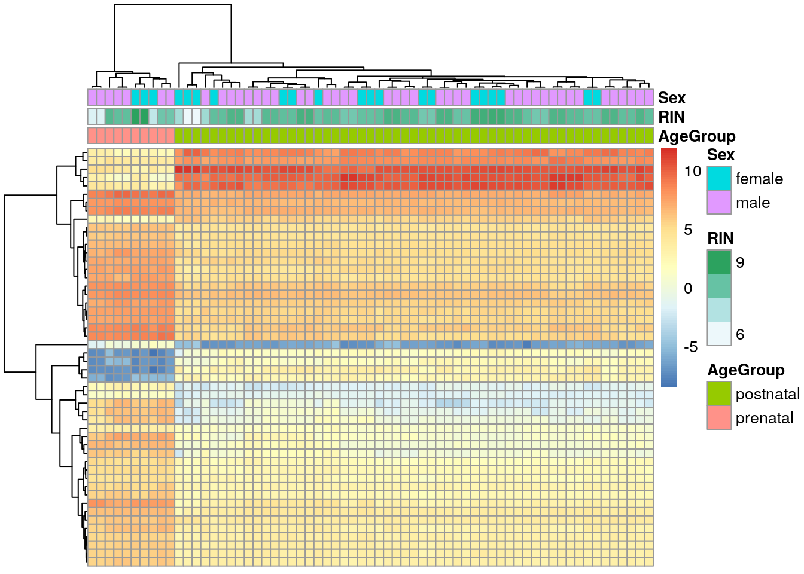
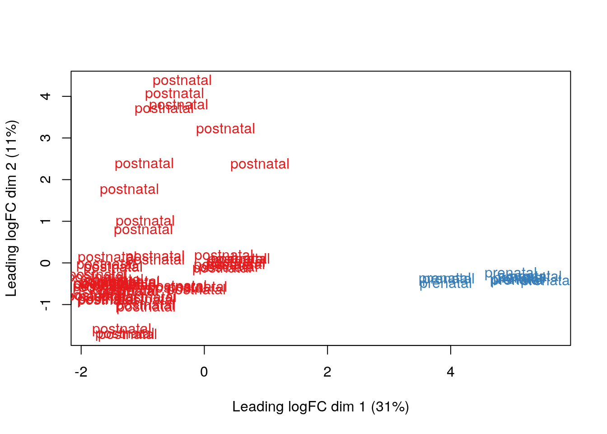

10 Differential gene expression analysis with limma
Instructor: Leo
10.1 SRP045638 data
We’ll use data from https://www.ncbi.nlm.nih.gov/sra/?term=SRP045638 processed and made available through the recount3 project. First, we need to download the data with the same commands we saw earlier.
library("recount3")
human_projects <- available_projects()
#> 2023-07-03 04:01:36.616696 caching file sra.recount_project.MD.gz.
#> 2023-07-03 04:01:36.808876 caching file gtex.recount_project.MD.gz.
#> 2023-07-03 04:01:37.016332 caching file tcga.recount_project.MD.gz.
rse_gene_SRP045638 <- create_rse(
subset(
human_projects,
project == "SRP045638" & project_type == "data_sources"
)
)
#> 2023-07-03 04:01:40.393963 downloading and reading the metadata.
#> 2023-07-03 04:01:40.596711 caching file sra.sra.SRP045638.MD.gz.
#> adding rname 'http://duffel.rail.bio/recount3/human/data_sources/sra/metadata/38/SRP045638/sra.sra.SRP045638.MD.gz'
#> 2023-07-03 04:01:41.154462 caching file sra.recount_project.SRP045638.MD.gz.
#> adding rname 'http://duffel.rail.bio/recount3/human/data_sources/sra/metadata/38/SRP045638/sra.recount_project.SRP045638.MD.gz'
#> 2023-07-03 04:01:41.748094 caching file sra.recount_qc.SRP045638.MD.gz.
#> adding rname 'http://duffel.rail.bio/recount3/human/data_sources/sra/metadata/38/SRP045638/sra.recount_qc.SRP045638.MD.gz'
#> 2023-07-03 04:01:42.381129 caching file sra.recount_seq_qc.SRP045638.MD.gz.
#> adding rname 'http://duffel.rail.bio/recount3/human/data_sources/sra/metadata/38/SRP045638/sra.recount_seq_qc.SRP045638.MD.gz'
#> 2023-07-03 04:01:42.987739 caching file sra.recount_pred.SRP045638.MD.gz.
#> adding rname 'http://duffel.rail.bio/recount3/human/data_sources/sra/metadata/38/SRP045638/sra.recount_pred.SRP045638.MD.gz'
#> 2023-07-03 04:01:43.556741 downloading and reading the feature information.
#> 2023-07-03 04:01:43.651719 caching file human.gene_sums.G026.gtf.gz.
#> 2023-07-03 04:01:44.245513 downloading and reading the counts: 66 samples across 63856 features.
#> 2023-07-03 04:01:44.380213 caching file sra.gene_sums.SRP045638.G026.gz.
#> adding rname 'http://duffel.rail.bio/recount3/human/data_sources/sra/gene_sums/38/SRP045638/sra.gene_sums.SRP045638.G026.gz'
#> 2023-07-03 04:01:45.342968 constructing the RangedSummarizedExperiment (rse) object.
assay(rse_gene_SRP045638, "counts") <- compute_read_counts(rse_gene_SRP045638)Now that we have the data and have computed the read counts (which will be needed for downstream analyses), we can use expand_sra_attributes() to make it easier to use the sample information in downstream analyses. However, we have to resolve some issues with this data first.
## Can you notice the problem with the sample information?
rse_gene_SRP045638$sra.sample_attributes[1:3]
#> [1] "age;;67.78|biomaterial_provider;;LIBD|BioSampleModel;;Human|dev_stage;;Fetal|disease;;Control|Fraction;;total|isolate;;DLPFC|race;;AA|RIN;;8.3|sex;;female|tissue;;DLPFC"
#> [2] "age;;40.42|biomaterial_provider;;LIBD|BioSampleModel;;Human|disease;;Control|Fraction;;total|isolate;;DLPFC|race;;AA|RIN;;8.4|sex;;male|tissue;;DLPFC"
#> [3] "age;;41.58|biomaterial_provider;;LIBD|BioSampleModel;;Human|disease;;control|Fraction;;total|isolate;;R2869|race;;AA|RIN;;8.7|sex;;male|tissue;;DLPFC"Lets resolve the issue we detected with this sample information. We’ll resolve this by eliminating some information that is only present in a subset of samples and that we don’t need.
rse_gene_SRP045638$sra.sample_attributes <- gsub("dev_stage;;Fetal\\|", "", rse_gene_SRP045638$sra.sample_attributes)
rse_gene_SRP045638$sra.sample_attributes[1:3]
#> [1] "age;;67.78|biomaterial_provider;;LIBD|BioSampleModel;;Human|disease;;Control|Fraction;;total|isolate;;DLPFC|race;;AA|RIN;;8.3|sex;;female|tissue;;DLPFC"
#> [2] "age;;40.42|biomaterial_provider;;LIBD|BioSampleModel;;Human|disease;;Control|Fraction;;total|isolate;;DLPFC|race;;AA|RIN;;8.4|sex;;male|tissue;;DLPFC"
#> [3] "age;;41.58|biomaterial_provider;;LIBD|BioSampleModel;;Human|disease;;control|Fraction;;total|isolate;;R2869|race;;AA|RIN;;8.7|sex;;male|tissue;;DLPFC"Now we can continue our work using similar code from the one we used earlier.
rse_gene_SRP045638 <- expand_sra_attributes(rse_gene_SRP045638)
colData(rse_gene_SRP045638)[
,
grepl("^sra_attribute", colnames(colData(rse_gene_SRP045638)))
]
#> DataFrame with 66 rows and 10 columns
#> sra_attribute.age sra_attribute.biomaterial_provider sra_attribute.BioSampleModel sra_attribute.disease
#> <character> <character> <character> <character>
#> SRR2071341 67.78 LIBD Human Control
#> SRR2071345 40.42 LIBD Human Control
#> SRR2071346 41.58 LIBD Human control
#> SRR2071347 44.17 LIBD Human control
#> sra_attribute.Fraction sra_attribute.isolate sra_attribute.race sra_attribute.RIN sra_attribute.sex
#> <character> <character> <character> <character> <character>
#> SRR2071341 total DLPFC AA 8.3 female
#> SRR2071345 total DLPFC AA 8.4 male
#> SRR2071346 total R2869 AA 8.7 male
#> SRR2071347 total R3098 AA 5.3 female
#> sra_attribute.tissue
#> <character>
#> SRR2071341 DLPFC
#> SRR2071345 DLPFC
#> SRR2071346 DLPFC
#> SRR2071347 DLPFC
#> [ reached getOption("max.print") -- omitted 7 rows ]As well use the sampel information for building our statistical model, it will important that we make sure that it is on the correct format R expects later on.
## Recast character vectors into numeric or factor ones
rse_gene_SRP045638$sra_attribute.age <- as.numeric(rse_gene_SRP045638$sra_attribute.age)
rse_gene_SRP045638$sra_attribute.disease <- factor(tolower(rse_gene_SRP045638$sra_attribute.disease))
rse_gene_SRP045638$sra_attribute.RIN <- as.numeric(rse_gene_SRP045638$sra_attribute.RIN)
rse_gene_SRP045638$sra_attribute.sex <- factor(rse_gene_SRP045638$sra_attribute.sex)
## Summary of our variables of interest
summary(as.data.frame(colData(rse_gene_SRP045638)[
,
grepl("^sra_attribute.[age|disease|RIN|sex]", colnames(colData(rse_gene_SRP045638)))
]))
#> sra_attribute.age sra_attribute.disease sra_attribute.isolate sra_attribute.RIN sra_attribute.sex
#> Min. :-0.4986 control:66 Length:66 Min. :5.30 female:22
#> 1st Qu.: 0.3424 Class :character 1st Qu.:8.00 male :44
#> Median :14.9000 Mode :character Median :8.30
#> Mean :22.6286 Mean :8.15
#> 3rd Qu.:41.2900 3rd Qu.:8.70
#> Max. :73.9100 Max. :9.60
We’ll now create a few variables from this sample information so we can use them in our analysis.
## We'll want to look for differences between prenatal and postnatal samples
rse_gene_SRP045638$prenatal <- factor(ifelse(rse_gene_SRP045638$sra_attribute.age < 0, "prenatal", "postnatal"))
table(rse_gene_SRP045638$prenatal)
#>
#> postnatal prenatal
#> 56 10
## http://rna.recount.bio/docs/quality-check-fields.html
rse_gene_SRP045638$assigned_gene_prop <- rse_gene_SRP045638$recount_qc.gene_fc_count_all.assigned / rse_gene_SRP045638$recount_qc.gene_fc_count_all.total
summary(rse_gene_SRP045638$assigned_gene_prop)
#> Min. 1st Qu. Median Mean 3rd Qu. Max.
#> 0.1942 0.7004 0.7591 0.7170 0.7991 0.8493
with(colData(rse_gene_SRP045638), plot(assigned_gene_prop, sra_attribute.RIN))
## Hm... lets check if therese a difference between these two groups
with(colData(rse_gene_SRP045638), tapply(assigned_gene_prop, prenatal, summary))
#> $postnatal
#> Min. 1st Qu. Median Mean 3rd Qu. Max.
#> 0.1942 0.7072 0.7719 0.7179 0.8017 0.8493
#>
#> $prenatal
#> Min. 1st Qu. Median Mean 3rd Qu. Max.
#> 0.6856 0.7004 0.7088 0.7116 0.7259 0.7347We can next drop some samples that we consider of low quality as well as genes that have low expression levels.
## Lets save our full object for now in case we change our minds later on
rse_gene_SRP045638_unfiltered <- rse_gene_SRP045638
## Lets drop some bad samples. On a real analysis, you would likely use
## some statistical method for identifying outliers such as scuttle::isOutlier()
hist(rse_gene_SRP045638$assigned_gene_prop)
table(rse_gene_SRP045638$assigned_gene_prop < 0.3)
#>
#> FALSE TRUE
#> 65 1
rse_gene_SRP045638 <- rse_gene_SRP045638[, rse_gene_SRP045638$assigned_gene_prop > 0.3]
## Lets compute the mean expression levels.
##
## Note: in a real analysis we would likely do this with RPKMs or CPMs instead
## of counts. That is, we would use one of the following options:
# edgeR::filterByExpr() https://bioconductor.org/packages/edgeR/ https://rdrr.io/bioc/edgeR/man/filterByExpr.html
# genefilter::genefilter() https://bioconductor.org/packages/genefilter/ https://rdrr.io/bioc/genefilter/man/genefilter.html
# jaffelab::expression_cutoff() http://research.libd.org/jaffelab/reference/expression_cutoff.html
#
gene_means <- rowMeans(assay(rse_gene_SRP045638, "counts"))
summary(gene_means)
#> Min. 1st Qu. Median Mean 3rd Qu. Max.
#> 0.0 0.1 2.5 815.2 170.2 1362047.9
## We can now drop genes with low expression levels
rse_gene_SRP045638 <- rse_gene_SRP045638[gene_means > 0.1, ]
## Final dimensions of our RSE object
dim(rse_gene_SRP045638)
#> [1] 46929 65
## Percent of genes that we retained:
round(nrow(rse_gene_SRP045638) / nrow(rse_gene_SRP045638_unfiltered) * 100, 2)
#> [1] 73.49We are now ready to continue with the differential expression analysis. Well, almost! 😅
10.2 Data normalization
- Read the A hypothetical scenario in one of the
edgeRpapers https://genomebiology.biomedcentral.com/articles/10.1186/gb-2010-11-3-r25#Sec2 to understand the concept of composition bias. - This concept is still relevant nowadays with single cell RNA-seq (scRNA-seq) data as you can see at http://bioconductor.org/books/3.16/OSCA.multisample/multi-sample-comparisons.html#performing-the-de-analysis. In that chapter they describe a series of steps for re-using bulk RNA-seq methods with scRNA-seq data.
library("edgeR")
dge <- DGEList(
counts = assay(rse_gene_SRP045638, "counts"),
genes = rowData(rse_gene_SRP045638)
)
dge <- calcNormFactors(dge)10.3 Differential expression
First of all, lets define our differential expression model. Typically, we would explore the data more to check that there are no other quality control issues with our samples and to explore in more detail the relationship between our sample phenotype variables.
library("ggplot2")
ggplot(as.data.frame(colData(rse_gene_SRP045638)), aes(y = assigned_gene_prop, x = prenatal)) +
geom_boxplot() +
theme_bw(base_size = 20) +
ylab("Assigned Gene Prop") +
xlab("Age Group")
For example, we would explore the contribution of different variables to the gene expression variability we observe using the variancePartition and scater Bioconductor packages, among others. We’ll do more of this tomorrow but you can also check these LIBD rstats club notes.
For now, we’ll use the following stastistical model.
mod <- model.matrix(~ prenatal + sra_attribute.RIN + sra_attribute.sex + assigned_gene_prop,
data = colData(rse_gene_SRP045638)
)
colnames(mod)
#> [1] "(Intercept)" "prenatalprenatal" "sra_attribute.RIN" "sra_attribute.sexmale"
#> [5] "assigned_gene_prop"Now that we have a model, we can use limma to actually compute the differential expression statistics and extract the results.
library("limma")
vGene <- voom(dge, mod, plot = TRUE)
eb_results <- eBayes(lmFit(vGene))
de_results <- topTable(
eb_results,
coef = 2,
number = nrow(rse_gene_SRP045638),
sort.by = "none"
)
dim(de_results)
#> [1] 46929 16
head(de_results)
#> source type bp_length phase gene_id gene_type gene_name level
#> ENSG00000223972.5 HAVANA gene 1735 NA ENSG00000223972.5 transcribed_unprocessed_pseudogene DDX11L1 2
#> ENSG00000278267.1 ENSEMBL gene 68 NA ENSG00000278267.1 miRNA MIR6859-1 3
#> ENSG00000227232.5 HAVANA gene 1351 NA ENSG00000227232.5 unprocessed_pseudogene WASH7P 2
#> havana_gene tag logFC AveExpr t P.Value adj.P.Val B
#> ENSG00000223972.5 OTTHUMG00000000961.2 <NA> -0.4522185 -3.444164 -1.637034 1.064080e-01 1.348462e-01 -5.554484
#> ENSG00000278267.1 <NA> <NA> 1.1158860 -1.311645 6.123756 5.743771e-08 2.105690e-07 7.763912
#> ENSG00000227232.5 OTTHUMG00000000958.1 <NA> 0.6860298 3.641131 5.644804 3.816951e-07 1.247133e-06 5.500784
#> [ reached 'max' / getOption("max.print") -- omitted 3 rows ]
## Differentially expressed genes between pre and post natal with FDR < 5%
table(de_results$adj.P.Val < 0.05)
#>
#> FALSE TRUE
#> 12851 34078
## We can now visualize the resulting differential expression results
plotMA(eb_results, coef = 2)
## We can also make a volcano plot
volcanoplot(eb_results, coef = 2, highlight = 3, names = de_results$gene_name)
de_results[de_results$gene_name %in% c("ZSCAN2", "VASH2", "KIAA0922"), ]
#> source type bp_length phase gene_id gene_type gene_name level havana_gene
#> ENSG00000143494.15 HAVANA gene 9086 NA ENSG00000143494.15 protein_coding VASH2 2 OTTHUMG00000036925.5
#> ENSG00000176371.13 HAVANA gene 4878 NA ENSG00000176371.13 protein_coding ZSCAN2 1 OTTHUMG00000074027.5
#> ENSG00000121210.15 HAVANA gene 6393 NA ENSG00000121210.15 protein_coding KIAA0922 2 OTTHUMG00000153244.5
#> tag logFC AveExpr t P.Value adj.P.Val B
#> ENSG00000143494.15 <NA> 5.444271 1.876990 37.85216 2.561452e-46 6.010319e-42 95.10126
#> ENSG00000176371.13 <NA> 2.735639 2.751109 36.59344 2.137022e-45 3.342943e-41 92.99949
#> ENSG00000121210.15 <NA> 3.283050 2.945269 41.89725 4.235912e-49 1.987871e-44 101.3112410.4 Visualizing DEGs
From vGene$E we can extract the normalized expression values that limma-voom computed. We can check the top 50 differentially expressed genes (DEGs) for example.
## Extract the normalized expression values from our limma-voom result
## from earlier
exprs_heatmap <- vGene$E[rank(de_results$adj.P.Val) <= 50, ]
## We can now build a table with information about our samples and
## then make the names a bit more friendly by making them easier to
## understand
df <- as.data.frame(colData(rse_gene_SRP045638)[, c("prenatal", "sra_attribute.RIN", "sra_attribute.sex")])
colnames(df) <- c("AgeGroup", "RIN", "Sex")
## Next, we can make a basic heatmap
library("pheatmap")
pheatmap(
exprs_heatmap,
cluster_rows = TRUE,
cluster_cols = TRUE,
show_rownames = FALSE,
show_colnames = FALSE,
annotation_col = df
)
We’ll learn more about gene expression heatmaps tomorrow!
Overall, these DEG results are not as surprising since there is a huge difference between pre and post natal gene expression in the human DLPFC. We can see that more clearly with a MDS (multidimensional scaling) plot just like its described in the limma workflow. Tomas will teach you more about dimension reduction tomorrow.
## For nicer colors
library("RColorBrewer")
## Mapping age groups into colors
col.group <- df$AgeGroup
levels(col.group) <- brewer.pal(nlevels(col.group), "Set1")
#> Warning in brewer.pal(nlevels(col.group), "Set1"): minimal value for n is 3, returning requested palette with 3 different levels
col.group <- as.character(col.group)
## MDS by age groups
limma::plotMDS(vGene$E, labels = df$AgeGroup, col = col.group)
## Mapping Sex values into colors
col.sex <- df$Sex
levels(col.sex) <- brewer.pal(nlevels(col.sex), "Dark2")
#> Warning in brewer.pal(nlevels(col.sex), "Dark2"): minimal value for n is 3, returning requested palette with 3 different levels
col.sex <- as.character(col.sex)
## MDS by Sex
limma::plotMDS(vGene$E, labels = df$Sex, col = col.sex)
A lot of times, running the differential expression analysis is not the hard part. Building your model and having all the covariates you need can be much more work!
10.5 Community
Some edgeR and limma authors:
- https://twitter.com/mritchieau
- https://twitter.com/davisjmcc
- https://twitter.com/markrobinsonca
- https://twitter.com/AliciaOshlack
If you've ever been dazed by design matrices or confused by contrasts when performing gene expression analysis in limma, the new article by Charity Law is for you https://t.co/ZSMOA20tdm #bioconductor #rstats (1/2)
— Matt Ritchie (@mritchieau) December 15, 2020